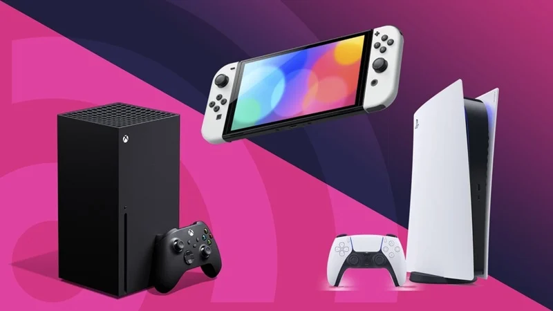

Nikmati pengalaman gaming tak terlupakan dengan grafis realistis dan fitur eksklusif yang inovatif.

Konsol game generasi terbaru seperti PlayStation 5 (PS5) dan Xbox Series X|S menawarkan peningkatan signifikan dalam kekuatan grafis, memungkinkan pengalaman bermain game yang lebih imersif dan realistis. Konsol ini dilengkapi dengan teknologi seperti ray tracing dan SSD, yang memberikan detail visual yang luar biasa dan kecepatan pemuatan yang lebih cepat
Kekuatan Grafis yang Memukau: PS5 dan Xbox Series X|S mampu menampilkan grafis 4K, detail yang tajam, dan efek visual yang memukau. Teknologi Ray Tracing: Teknologi ini memungkinkan simulasi cahaya yang lebih realistis, menciptakan bayangan dan refleksi yang lebih alami di dalam game. SSD (Solid State Drive): SSD memungkinkan game untuk dimuat dengan sangat cepat, mengurangi waktu loading dan meningkatkan pengalaman bermain. Pengalaman Bermain yang Imersif: Kombinasi dari grafis yang kuat, teknologi ray tracing, dan SSD menciptakan pengalaman bermain game yang lebih imersif dan realistis.
Pilihan Konsol: Jika Anda mencari konsol dengan kekuatan grafis terbaik, PS5 dan Xbox Series X adalah pilihan yang tepat. Pilihan Lain: Jika Anda mencari konsol yang lebih terjangkau atau hybrid (bisa digunakan sebagai konsol rumah dan portabel), Nintendo Switch adalah pilihan yang menarik. Kesimpulan: Konsol game generasi terbaru telah membawa revolusi dalam dunia gaming, dengan peningkatan signifikan dalam kekuatan grafis dan performa. Jika Anda menginginkan pengalaman bermain game yang paling imersif dan realistis, PS5 dan Xbox Series X|S adalah pilihan yang tidak dapat diabaikan